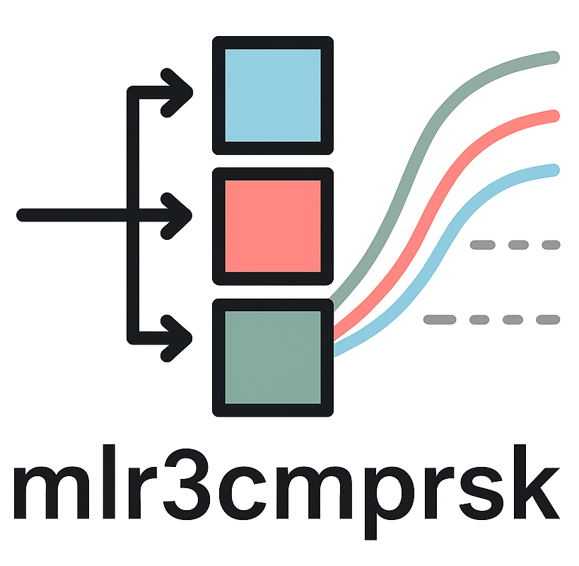

Fine-Gray Competing Risks Learner
mlr_learners_cmprsk.fg.RdFine-Gray subdistribution hazards model for competing risks using
cmprsk::crr().
Details
The fitted model is an S3 object of class "fine_gray" that stores a
cause-specific list of crr class models.
At prediction time, each cause-specific model is evaluated with
cmprsk::predict.crr() and the resulting CIF matrices are aligned to a common
time grid across causes using constant CIF interpolation.
The time grid is the unique event times (across all causes) observed in the training set.
Time-interaction terms (via cov2) are not implemented.
Dictionary
This Learner can be instantiated via the dictionary mlr_learners or with the associated sugar function lrn():
Meta Information
Task type: “cmprsk”
Predict Types: “cif”
Feature Types: “logical”, “integer”, “numeric”
Required Packages: mlr3, mlr3cmprsk, cmprsk
Parameters
| Id | Type | Default | Levels | Range |
| cengroup | numeric | - | \((-\infty, \infty)\) | |
| gtol | numeric | 1e-06 | \([0, \infty)\) | |
| maxiter | integer | 10 | \([0, \infty)\) | |
| init | untyped | - | - | |
| variance | logical | TRUE | TRUE, FALSE | - |
References
Fine, P J, Gray, J R (1999). “A Proportional Hazards Model for the Subdistribution of a Competing Risk.” Journal of the American Statistical Association, 94(446), 496–509. doi:10.1080/01621459.1999.10474144 .
See also
Other competing risk learners:
mlr_learners_cmprsk.aalen
Super classes
mlr3::Learner -> mlr3cmprsk::LearnerCompRisks -> LearnerCompRisksFineGray
Examples
# Define the Learner
learner = lrn("cmprsk.fg")
learner
#>
#> ── <LearnerCompRisksFineGray> (cmprsk.fg): Competing Risks Regression: Fine-Gray
#> • Model: -
#> • Parameters: list()
#> • Packages: mlr3, mlr3cmprsk, and cmprsk
#> • Predict Types: [cif]
#> • Feature Types: logical, integer, and numeric
#> • Encapsulation: none (fallback: -)
#> • Properties:
#> • Other settings: use_weights = 'error', predict_raw = 'FALSE'
# Define a Task
task = tsk("pbc")
# Subset task features as Fine-Gray model doesn't accept factors
# Encode factors with `mlr3pipelines::po("encode")` if needed
feats = c("age", "chol", "albumin", "ast", "bili", "protime")
task$select(feats)
# Stratification based on event
task$set_col_roles(cols = "status", add_to = "stratum")
# Create train and test set
part = partition(task)
# Train the learner on the training set
learner$train(task, row_ids = part$train)
learner$native_model
#> $`1`
#> convergence: TRUE
#> coefficients:
#> age albumin ast bili chol protime
#> -0.0861400 0.0224300 -0.0018270 0.0065160 0.0009787 -0.4471000
#> standard errors:
#> [1] 0.026500 0.910600 0.004680 0.135600 0.001879 0.541600
#> two-sided p-values:
#> age albumin ast bili chol protime
#> 0.0012 0.9800 0.7000 0.9600 0.6000 0.4100
#>
#> $`2`
#> convergence: TRUE
#> coefficients:
#> age albumin ast bili chol protime
#> 0.0430700 -1.3450000 0.0029910 0.1708000 -0.0008802 0.1901000
#> standard errors:
#> [1] 0.0169100 0.2684000 0.0020410 0.0293800 0.0004506 0.1091000
#> two-sided p-values:
#> age albumin ast bili chol protime
#> 1.1e-02 5.4e-07 1.4e-01 6.2e-09 5.1e-02 8.1e-02
#>
#> attr(,"class")
#> [1] "fine_gray"
# Make predictions for the test set
predictions = learner$predict(task, row_ids = part$test)
predictions
#>
#> ── <PredictionCompRisks> for 92 observations: ──────────────────────────────────
#> row_ids time event CIF
#> 4 63 2 <list[2]>
#> 8 78 2 <list[2]>
#> 9 1 2 <list[2]>
#> --- --- --- ---
#> 139 81 1 <list[2]>
#> 157 73 1 <list[2]>
#> 231 35 1 <list[2]>
# Score the predictions
# AUC(t = 100), weighted mean score across causes (default)
predictions$score(msr("cmprsk.auc", cause = "mean", time_horizon = 100))
#> cmprsk.auc
#> 0.7353124
# AUC(t = 100), 1st cause
predictions$score(msr("cmprsk.auc", cause = 1, time_horizon = 100))
#> cmprsk.auc
#> 0.8248884
# AUC(t = 100), 2nd cause
predictions$score(msr("cmprsk.auc", cause = 2, time_horizon = 100))
#> cmprsk.auc
#> 0.7207866